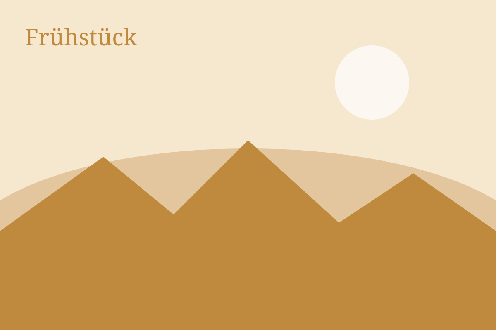
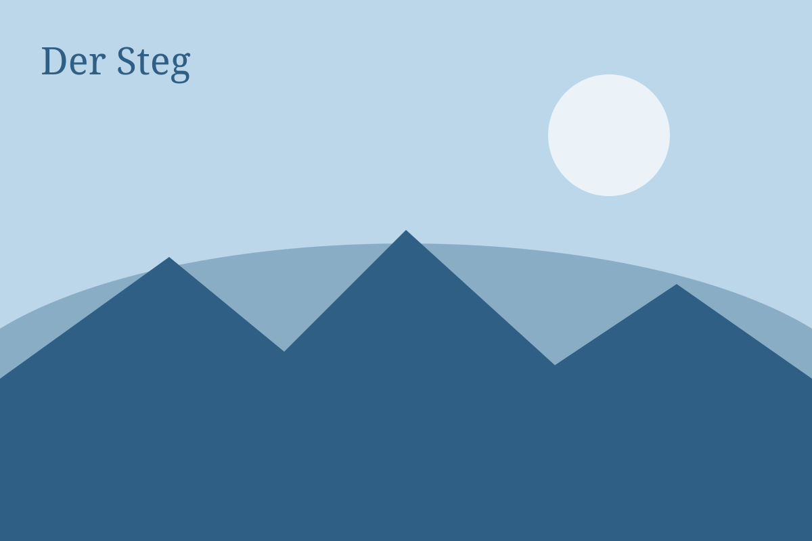
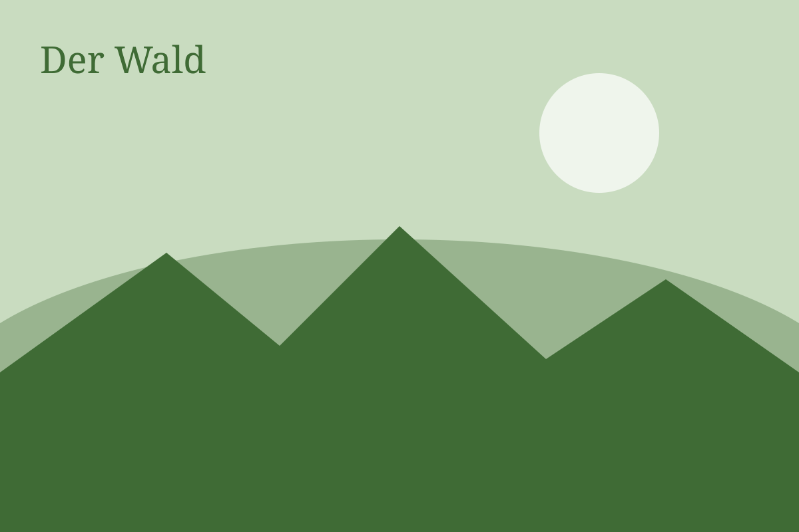

Frühstück bis elf
Brot vom Dorfbäcker, Eier vom Hof nebenan, Marmelade aus dem eigenen Garten. Draußen, wenn das Wetter es erlaubt.

Pension am Chiemsee
Sechs Zimmer, ein Garten bis ans Wasser und ein Frühstück, das sich Zeit lässt. Seit 1962 in Familienhand.

Brot vom Dorfbäcker, Eier vom Hof nebenan, Marmelade aus dem eigenen Garten. Draußen, wenn das Wetter es erlaubt.

Zwei Liegestühle, ein Ruderboot und das klarste Wasser weit und breit. Die Handtücher liegen bereit.

Rund um den See, hinauf zur Kampenwand oder gemütlich ins Dorf. Wir leihen Ihnen Räder und Karten.
„Wir sind nur für zwei Nächte gekommen und für eine Woche geblieben.“
Familie Berger aus Köln, August 2026